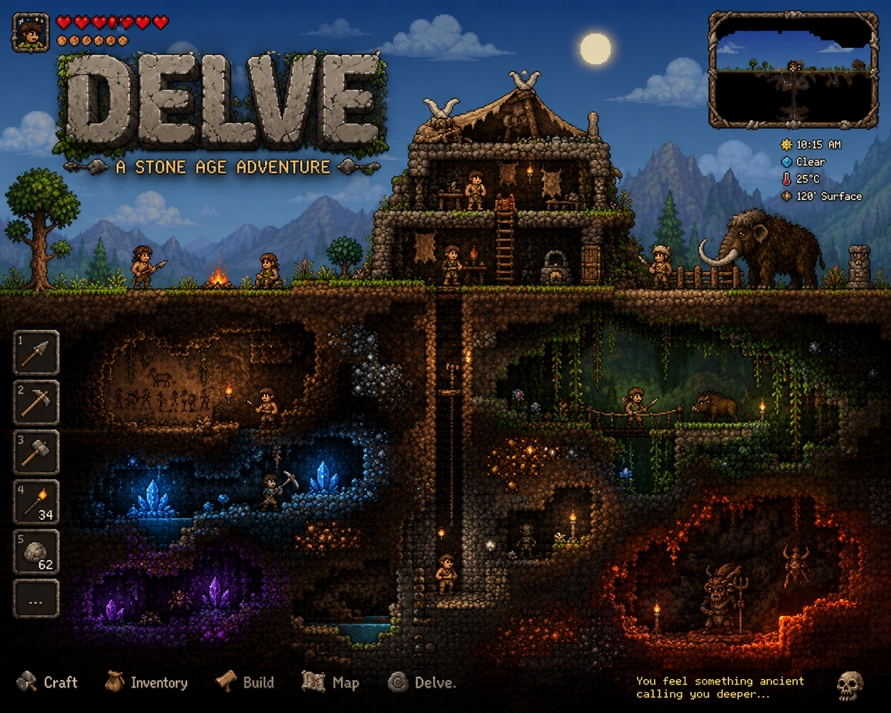
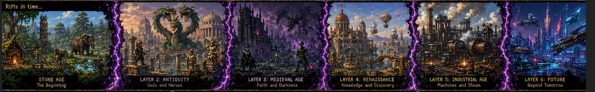
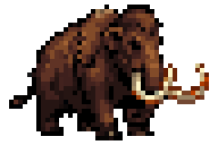
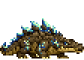
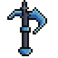
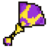

01 / DIGITAL MARKNADSFÖRING
Delve: A Stone Age Adventure
Marknadsföring av ett 2D-pixeläventyr från tidig prototyp till lanseringsredo spel.
Delve är ett indieprojekt som tar avstamp i stenåldern och kombinerar utforskning ovan och under jord med resurser, crafting, byggande och möten med förhistoriska varelser.
Mitt fokus är att bygga spelets digitala närvaro från grunden: dokumentera utvecklingen, skapa innehåll som gör världen och spelidén tydlig samt stegvis leda intresset vidare till önskelistor på Steam.
VÄRLD & POSITIONERING
Ett äventyr genom tidens lager
Konceptmaterialet ger projektet en tydlig kommunikativ kärna: resan börjar i stenåldern, medan sprickor i tiden öppnar för nya epoker, miljöer och berättelser.

CONTENT-MATERIAL
En växande visuell verktygslåda
Karaktärer, varelser och utrustning kan användas som återkommande innehåll i utvecklingsuppdateringar, korta klipp, omröstningar och presentationer av spelets värld.



